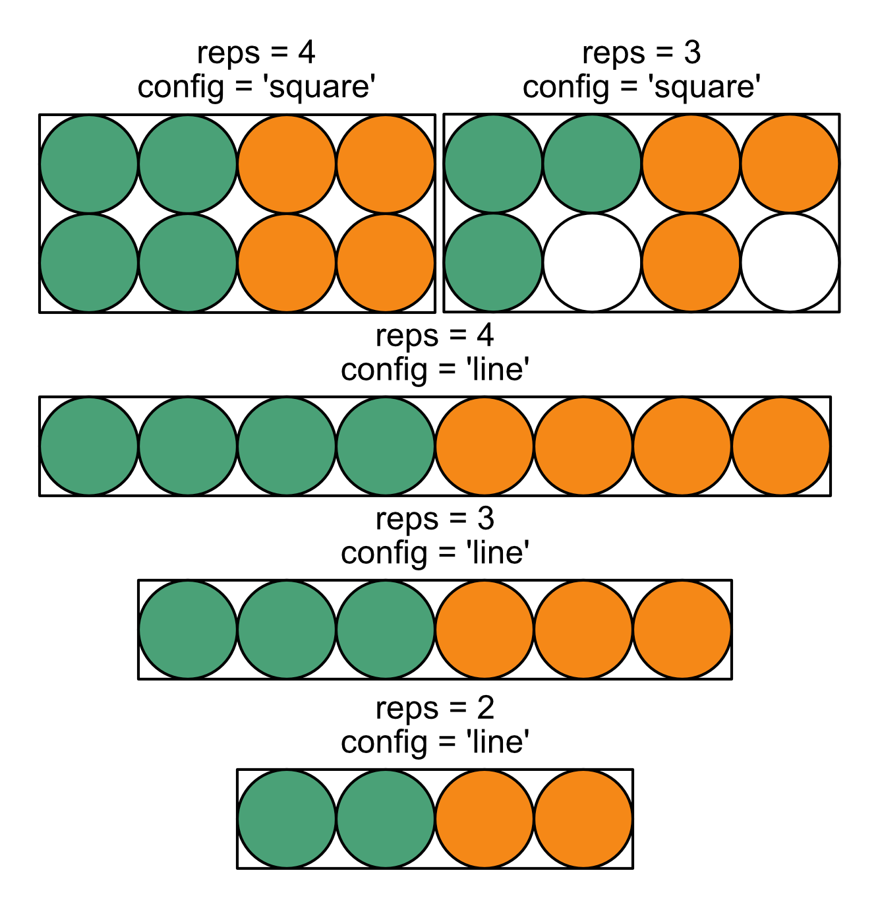
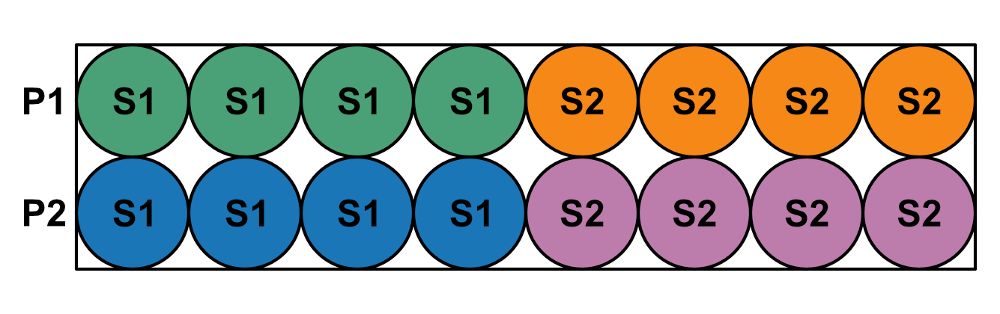
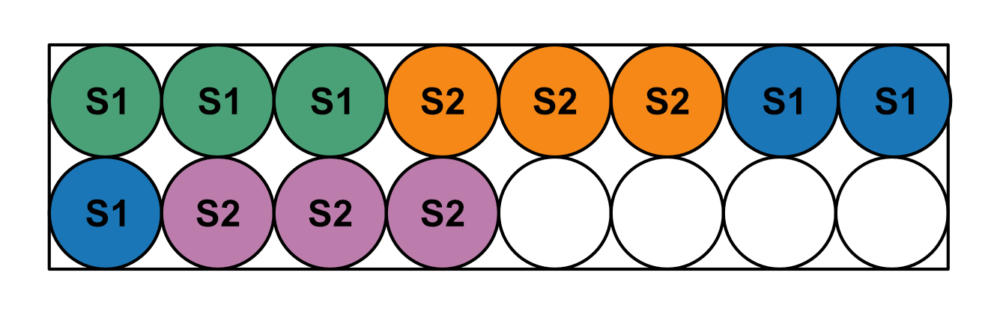

Plate Set-Up
Equipt allows for a variety of plate set-ups, but has some intentional limitations. Standardizing plate loading makes it easier to supply a limited number of arguments to equipt, reducing the likelihood of human error. Any plate format is acceptable as long as the following conditions are met. 2, 3, or 4 replicates are permitted in either a square or line configuration, as shown in the image below.
{kind=link}
Within this format, equipt expects samples to be grouped by primers rather than primers by samples. For example, the below shows a plate with 4 replicates per sample in a line. Each row has a different primer, and each group of 4 columns is a different sample.
{kind=link}
Primers do not need to be on separate rows, but each primer must have a continuous group of samples. Using the same color scheme as the image above, but this time with only 3 replicate wells, the following scheme is also acceptable.
{kind=link}
The intention behind this scheme is that primer master mixes are prepared in 1.7mL tubes and aliquoted into strip tubes or a 96-well plate. Samples are diluted in strip tubes and then pipetted with a multichannel into the aliquots of primer master mix. After the samples have been thoroughly mixed then spun back down to the bottom of the tube, primer-sample mixes are pipetted with a multichannel into replicate wells in one of the conformations above.
Currently, each primer must be used with every sample. If you plan to do an experiment where different samples have different primers, the plate should be divided to follow the equipt loading conventions for each set of primer-sample pairs. To understand how to communicate this set-up to equipt, and for additional details on importing qPCR data, see the documentation for namer().